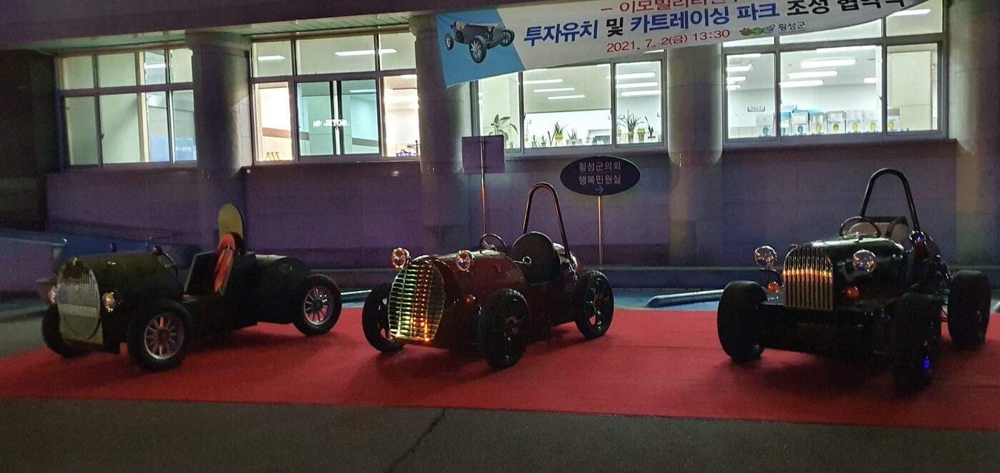
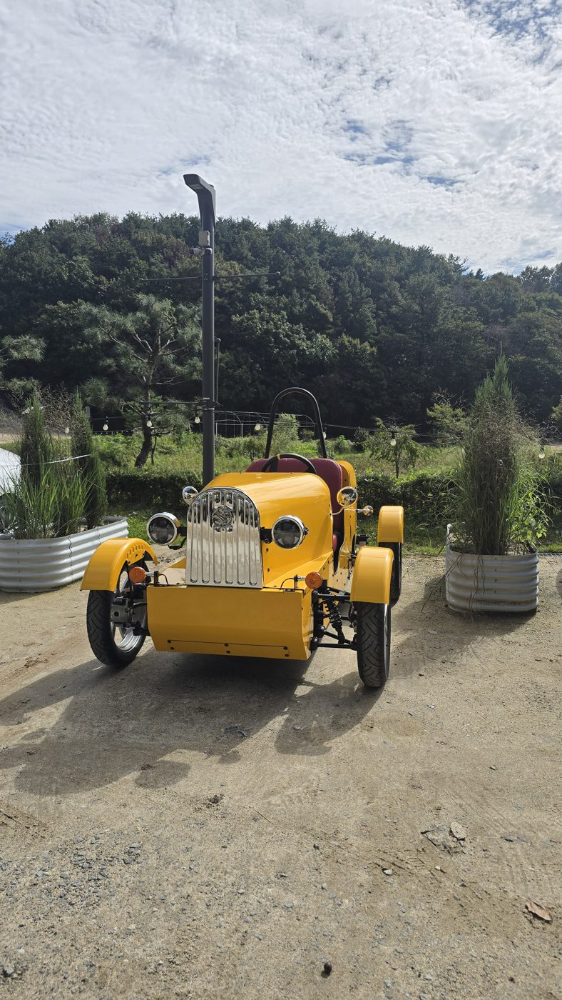
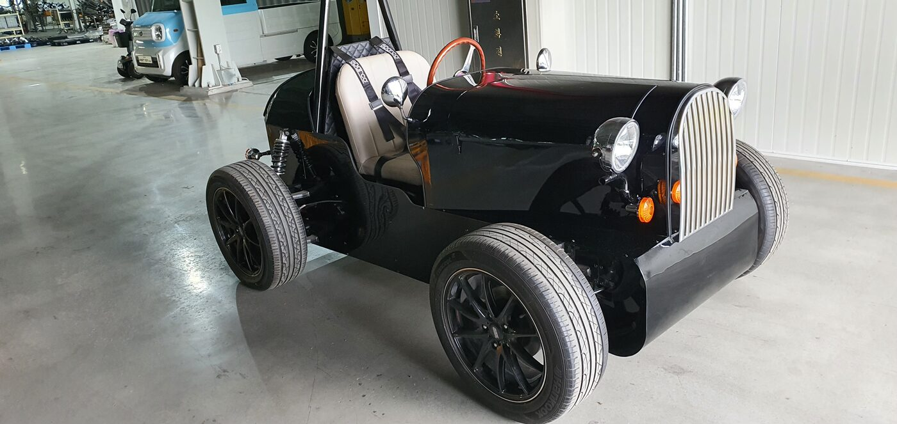
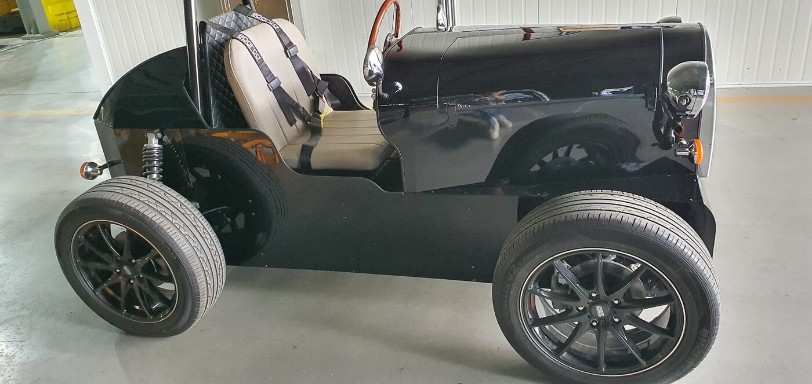
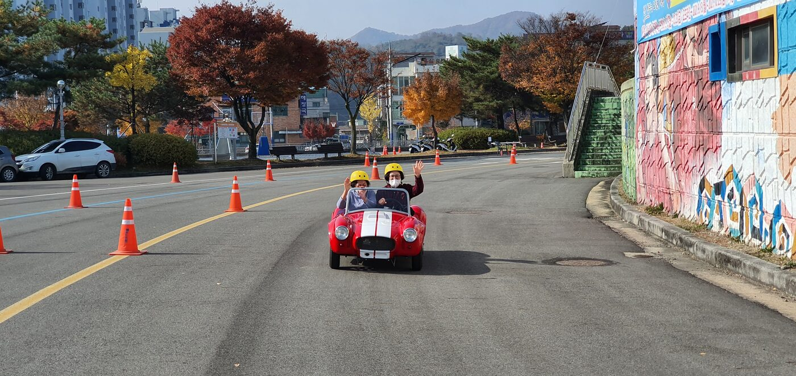
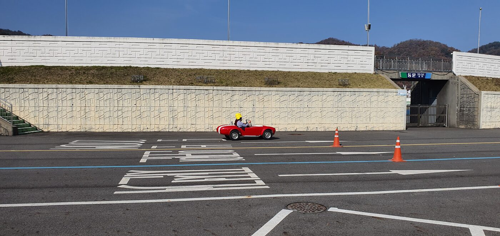
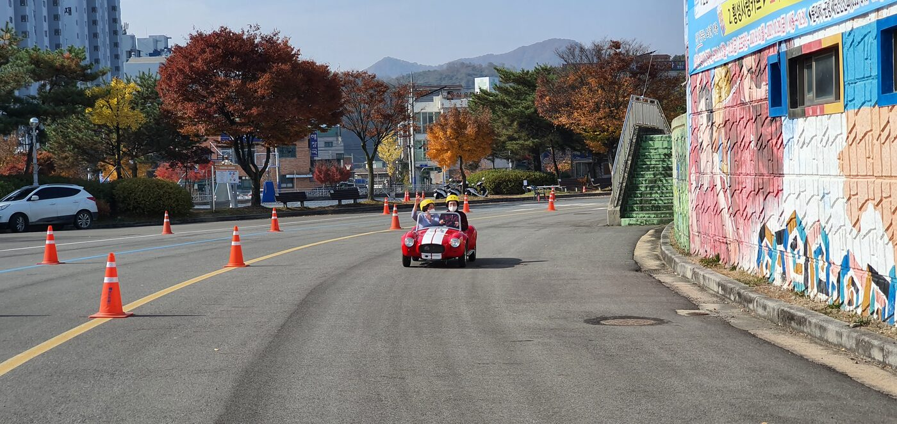

분류사륜형 이륜차
1인승·개방형
1인승·개방형
인증국토교통부·환경부
인증 완료
인증 완료
면허원동기장치자전거 이상
(자동차 면허 가능)
(자동차 면허 가능)
가격2,500만 원
02 / Gallery
도로 위의 칼리(KALLI)
전시·시승 체험·코스 주행 현장의 실제 칼리 모습입니다.







03 / Products
제품 라인업
 RACING CHAMPIONSHIP
RACING CHAMPIONSHIP코딩 레이싱 카트 · 에듀카트 챔피언십
- 이론 4시간 · 코딩·조립 실습 6시간 · 조별 레이싱으로 이어지는 통합 프로그램
- 참가팀이 아두이노 제어 코드를 직접 튜닝하는 분리형 프레임(Ver.4) 카트
- 지역 예선 → 전국 본선 구조로 레이싱 스포츠화 추진
EDUCATION
교육용 사이클카트 · 아프리카 No.1
- 친환경 재료 사용, 학교 로고 주문 제작
- 도로주행용 이모빌리티와 같은 동작 방식
- 오픈소스 하드웨어 기반 코딩 교육·제어 소스 제공
- 12V·24V·36V 시스템 자유 구성
newtroM Project — EMTRA(이모빌리티연구조합)를 통해 개발한 사이클카트 사업화를 준비하고 있습니다.
일반 도로에서 주행할 수 있나요?
네. 국토교통부와 환경부 인증 절차를 통과해 정식 번호판을 달고 일반 국도와 도심 도로를 달릴 수 있습니다. 이륜차 분류이므로 고속도로와 자동차 전용도로는 들어갈 수 없습니다.
어떤 면허가 필요한가요?
원동기장치자전거 면허 이상이 필요합니다. 1종·2종 보통 등 자동차 운전면허가 있으면 추가 면허 없이 주행할 수 있습니다.
번호판과 보험은 어떻게 하나요?
출고 후 책임보험에 먼저 가입하고, 보험 가입 증명서와 제작증으로 관할 구청·주민센터에 이륜차 사용 신고를 한 뒤 번호판을 부착합니다.
2인승 모델이 있나요?
현행 규정상 사륜형 이륜차는 1인승이며, 지붕과 문을 달 수 없는 개방형 구조를 유지해야 합니다.